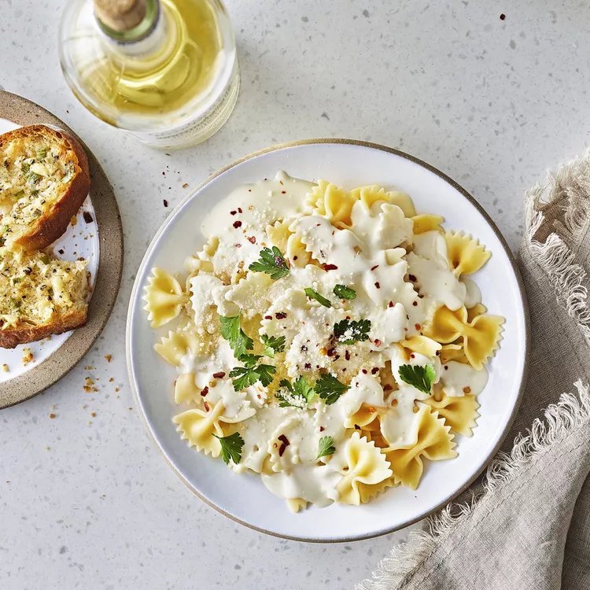

Alfredo Sauce

Description
This Olive Garden Alfredo sauce is better than the famous Italian restaurant chain's version. Alfredo sauce has
always had my heart, whether chicken Alfredo or fettuccine Alfredo. This is a simple and basic recipe for
Italian starters. Sprinkle some freshly chopped parsley over your plate for an added touch. Enjoy!
Ingredients
- 3 tablespoons sweet butter
- 2 tablespoons olive oil
- 2 cups heavy whipping cream
- 2 cloves garlic, minced
- ¼ teaspoon ground white pepper
- ½ cup grated Parmesan cheese
- ¾ cup shredded mozzarella cheese
- 1 (12 ounce) package angel hair pasta
Steps
- Melt butter and olive oil in a saucepan over medium-low heat. Add cream, garlic, and white pepper; bring to just under a boil. Reduce heat and simmer, stirring often, until mixture is slightly reduced, about 5 minutes.
- Stir Parmesan cheese into cream mixture; simmer until sauce is thickened and smooth, 8 to 10 minutes. Add mozzarella cheese; cook and stir until melted, about 5 minutes.
- While the sauce is cooking, bring a large pot of lightly salted water to a boil. Add pasta; cook, stirring occasionally, until cooked through but firm to the bite, 3 to 5 minutes.
- Drain and transfer pasta to serving plates. Spoon sauce over pasta.